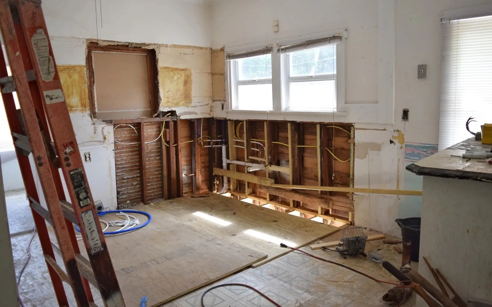

Repairs and as-is sales
Sell a house that needs repairs without becoming the contractor.
Short answer: Roof, HVAC, plumbing, flooring, cleanout, foundation concerns, or dated interiors can make a traditional sale more complicated. We can review the home as-is and explain your options.

Repairs we can factor into the offer
- Roof and exterior issues.
- Water damage or old plumbing.
- HVAC and electrical updates.
- Flooring, drywall, paint, and cosmetic updates.
- Cleanout, junk removal, and neglected landscaping.
Compare before you decide.
Sometimes repairs before listing are worth doing. Sometimes they eat time and money without enough return. The right answer depends on the house, the neighborhood, your budget, and your timeline.
By Toby Russell, founder of America Home Buyers LLC. Updated .
Local property reviews: Thomasville, Lexington, Winston-Salem, Greensboro and High Point. Discuss your property.
Can I request an offer before completing repairs or cleanout?
Yes. Describe the property as it is, including known repairs, belongings and occupancy, so those details can be considered in the review.
Does requesting an offer obligate me to sell?
No. You can compare a direct offer with listing, keeping the property or waiting. A sale requires mutually accepted written terms and completed closing requirements.